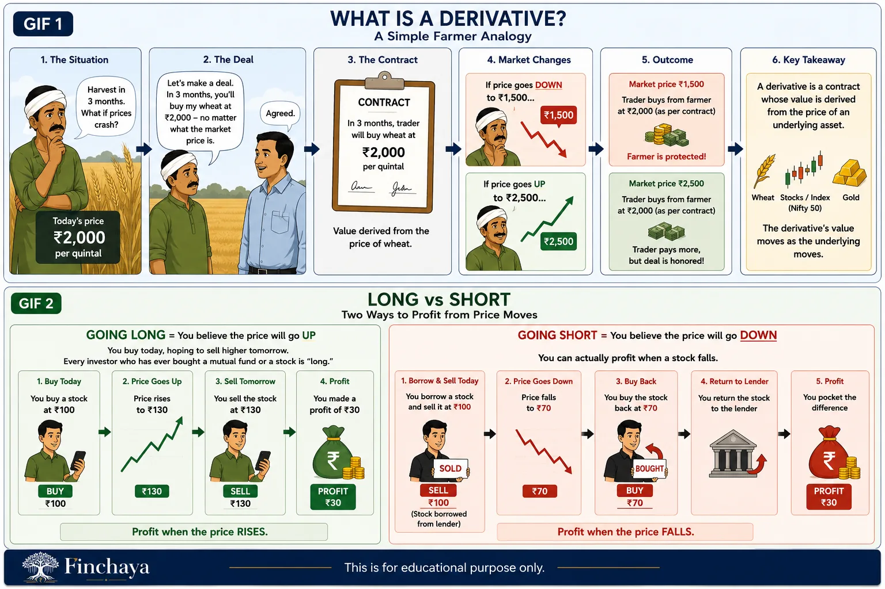

What is a Derivative? What is Long and Short?
Before you can understand SIF, you need to understand one word: derivative.
Let me explain it the way I'd explain it to my mother.
Forget the stock market for a moment
Imagine you're a farmer. You grow wheat. The harvest is 3 months away. Today's price is ₹2,000 per quintal. But you're worried — what if prices crash to ₹1,500 by harvest time?
So you walk up to a trader and say:
"Let's make a deal today. Three months from now, you'll buy my wheat at ₹2,000 — no matter what the market price is."
The trader agrees. You both sign a contract.
That contract — whose value is derived from the price of wheat — is a derivative.
You didn't buy or sell wheat today. You bought certainty about the future price.
Now bring this back to the stock market. Instead of wheat, the underlying asset is a stock, an index like Nifty 50, or even gold. The derivative's value moves as the underlying moves.
Now let's talk Long and Short
These two words sound complicated. They're not.
Going Long = You believe the price will go UP.
You buy today, hoping to sell higher tomorrow. Every investor who has ever bought a mutual fund or a stock is "long." You profit when the price rises.
Going Short = You believe the price will go DOWN.
This one surprises people. You can actually profit when a stock falls.
Here's how: You borrow a stock today, sell it at ₹100. The price drops to ₹70. You buy it back at ₹70, return it to the lender, and pocket the ₹30 difference.
You made money on a falling stock. That's a short position.

Why does this matter for SIF?
A traditional mutual fund can only go long. If a fund manager thinks Infosys is overvalued — the best they can do is not buy it.
An SIF fund manager can go short. They can actively bet against an overvalued stock using derivatives and potentially profit from that call.
This is why SIF strategies like "long-short equity" are genuinely different from anything a regular mutual fund can offer.
Mutual Fund investments are subject to market risks. Read all scheme-related documents carefully. This post is for educational purposes only and does not constitute investment advice.